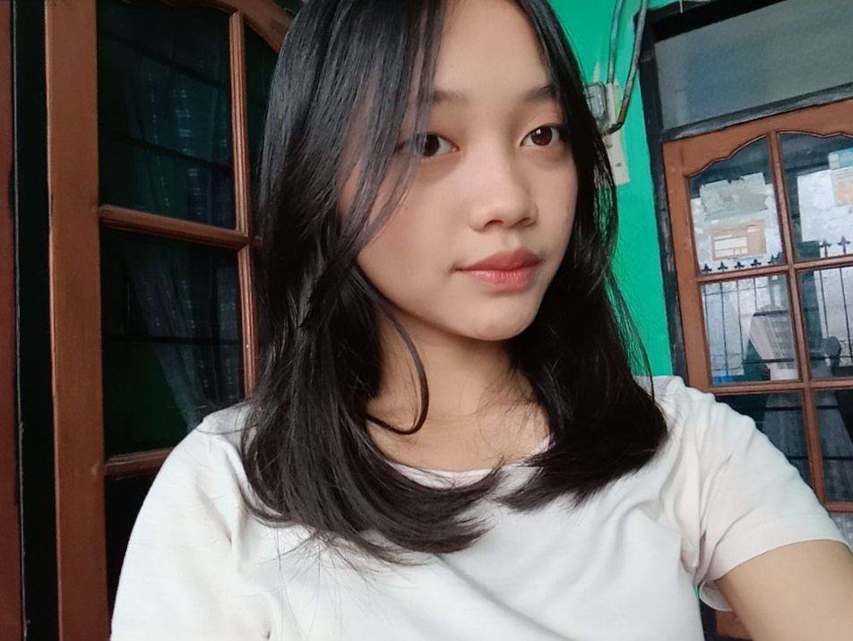

Nama: Kayla Salsabila
Kelas: XI-12
Website ini dibuat dengan sepenuh hati dan rasa suka yang nggak bisa dijelasin panjang lebar tapi tetep aku jelasin juga.
Mr’s Lee adalah seseorang yang aku maksud sebagai Lee Haechan.
Sebutan ini aku pakai karena rasanya lebih personal dan lucu aja.
Haechan itu tipe orang yang punya aura beda.
Dia bisa keliatan playful, bisa keliatan serius,
bisa lucu banget, tapi juga bisa bikin orang terdiam cuma karena dia ngomong pelan.
Kalau di bagian selanjutnya aku nyebut Haechan,
itu masih Mr’s Lee yang sama.
Ada sesuatu tentang Haechan yang susah dijelasin. He’s funny but not trying too hard. He shines without forcing it. Dan itu bikin dia beda banget.
Aku suka dia bukan cuma karena visual. Tapi karena caranya kerja keras, caranya tetap jadi diri sendiri, dan caranya bikin orang ketawa tanpa sadar. He’s comforting in his own chaotic way.
I really admire how hardworking Haechan is. Di balik image-nya yang playful dan ceria, dia serius banget sama apa yang dia kerjain. Selalu all out, dan selalu membuat aku kagum.
“10,000 Hours” feels so Haechan coded. Gatau kenapa aku suka banget lagu ini sambil liat foto haechan. Kadang rasanya cocok aja. Dan sebagian orang juga mengaggap lagu ini cocok dengannya.